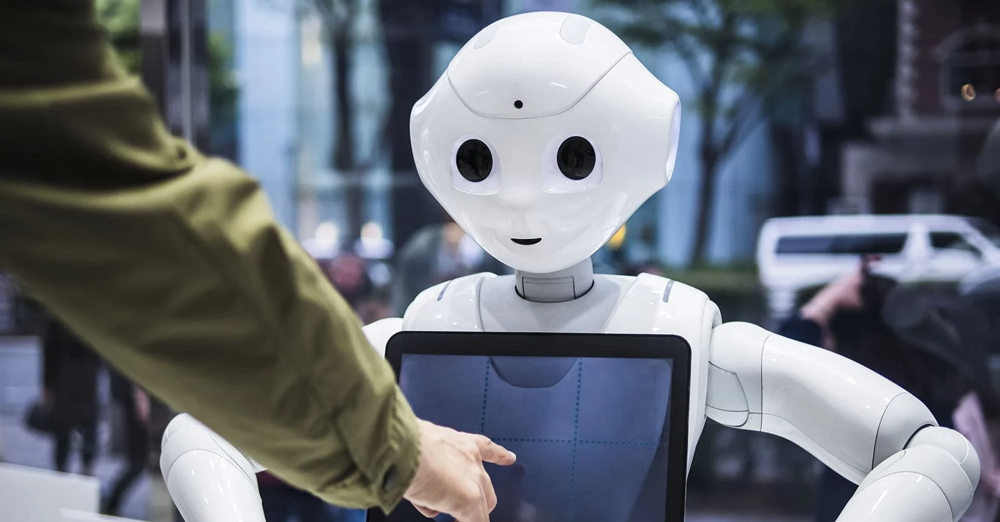

Types of Robots and How They’re Used
By Brooke Becher
Robots come in all shapes, sizes and capabilities. Today, they perform surgical procedures in operating rooms, backflip through obstacle courses, rove through outer space and venture down the uncanny valley. And with artificial intelligence and machine learning in the mix, robots are only becoming more sophisticated.

Types of Robots:
HUMANOID ROBOTS
Humanoid robots are machines built to resemble humans in both form and function.
Engineers use actuators to replicate muscle-joint movement, a variety of sensors — complete
with computer vision and haptic feedback — that allow them to perceive their surroundings and
artificial intelligence algorithms, including speech recognition and machine learning,
that allow them to autonomously interpret and interact with the world around them.
While most models are still in the prototype phase, humanoids are primarily being developed for
research and professional services purposes.
SERVICE ROBOTS
Service robots are built to serve humans in either personal or professional settings.
Typically, these robots take on dull, dirty, repetitive or dangerous chores,
and are deployed in non-industrial environments to create efficiency in everyday tasks.
Service robots may take on household labor, assist seniors to live independently,
check-in hotel guests or craft burgers and pies in a restaurant kitchen.

SPACE ROBOTS
Space robots are unmanned aircrafts that are launched beyond Earth’s
atmosphere for the purpose of space exploration. Rovers,
landers and orbiters gather information by performing tasks in outer space,
such as capturing photos, collecting samples or conducting experiments.
This real-time data is then reported back to Earth-based mission control centers or a local manned spacecraft.
Space robots may be autonomous, semi-autonomous or remote controlled.
They offer a safer alternative to human-led missions at a fraction of the cost.
EDUCATIONAL ROBOTS
Educational robots are robotic teaching aids designed to enhance learning experiences in educational settings.
As a tangible platform for experimentation,
they create more engaging classrooms with hands-on activities and interactive lessons.
From virtual reality headset systems to simulators and droids, these highly programmable
machines typically feature user-friendly interfaces inclusive to younger audiences. Some
humanoid models serve as teaching assistants, personal tutors, small group leaders and classroom peers, a
nd are equipped with emotion-perceiving sensors to assist students in their social skill development.